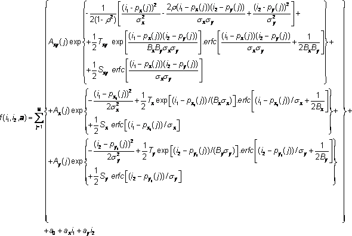

class TSpectrum2Fit: public TNamed
THIS CLASS CONTAINS ADVANCED TWO-DIMENSIONAL SPECTRA FITTING FUNCTIONS These functions were written by: Miroslav Morhac Institute of Physics Slovak Academy of Sciences Dubravska cesta 9, 842 28 BRATISLAVA SLOVAKIA email:fyzimiro@savba.sk, fax:+421 7 54772479 The original code in C has been repackaged as a C++ class by R.Brun The algorithms in this class have been published in the following references: [1] M. Morhac et al.: Efficient fitting algorithms applied to analysis of coincidence gamma-ray spectra. Computer Physics Communications, Vol 172/1 (2005) pp. 19-41. [2] M. Morhac et al.: Study of fitting algorithms applied to simultaneous analysis of large number of peaks in gamma-ray spectra. Applied Spectroscopy, Vol. 57, No. 7, pp. 753-760, 2003.
Function Members (Methods)
| TSpectrum2Fit() | |
| TSpectrum2Fit(Int_t numberPeaks) | |
| TSpectrum2Fit(const TSpectrum2Fit&) | |
| virtual | ~TSpectrum2Fit() |
| void | TObject::AbstractMethod(const char* method) const |
| virtual void | TObject::AppendPad(Option_t* option = "") |
| virtual void | TObject::Browse(TBrowser* b) |
| static TClass* | Class() |
| virtual const char* | TObject::ClassName() const |
| virtual void | TNamed::Clear(Option_t* option = "") |
| virtual TObject* | TNamed::Clone(const char* newname = "") const |
| virtual Int_t | TNamed::Compare(const TObject* obj) const |
| virtual void | TNamed::Copy(TObject& named) const |
| virtual void | TObject::Delete(Option_t* option = "")MENU |
| virtual Int_t | TObject::DistancetoPrimitive(Int_t px, Int_t py) |
| virtual void | TObject::Draw(Option_t* option = "") |
| virtual void | TObject::DrawClass() constMENU |
| virtual TObject* | TObject::DrawClone(Option_t* option = "") constMENU |
| virtual void | TObject::Dump() constMENU |
| virtual void | TObject::Error(const char* method, const char* msgfmt) const |
| virtual void | TObject::Execute(const char* method, const char* params, Int_t* error = 0) |
| virtual void | TObject::Execute(TMethod* method, TObjArray* params, Int_t* error = 0) |
| virtual void | TObject::ExecuteEvent(Int_t event, Int_t px, Int_t py) |
| virtual void | TObject::Fatal(const char* method, const char* msgfmt) const |
| virtual void | TNamed::FillBuffer(char*& buffer) |
| virtual TObject* | TObject::FindObject(const char* name) const |
| virtual TObject* | TObject::FindObject(const TObject* obj) const |
| void | FitAwmi(Float_t** source) |
| void | FitStiefel(Float_t** source) |
| void | GetAmplitudeErrors(Float_t* amplitudeErrors, Float_t* amplitudeErrorsX1, Float_t* amplitudeErrorsY1) |
| void | GetAmplitudes(Float_t* amplitudes, Float_t* amplitudesX1, Float_t* amplitudesY1) |
| void | GetBackgroundParameters(Double_t& a0, Double_t& a0Err, Double_t& ax, Double_t& axErr, Double_t& ay, Double_t& ayErr) |
| Double_t | GetChi() const |
| virtual Option_t* | TObject::GetDrawOption() const |
| static Long_t | TObject::GetDtorOnly() |
| virtual const char* | TObject::GetIconName() const |
| virtual const char* | TNamed::GetName() const |
| virtual char* | TObject::GetObjectInfo(Int_t px, Int_t py) const |
| static Bool_t | TObject::GetObjectStat() |
| virtual Option_t* | TObject::GetOption() const |
| void | GetPositionErrors(Float_t* positionErrorsX, Float_t* positionErrorsY, Float_t* positionErrorsX1, Float_t* positionErrorsY1) |
| void | GetPositions(Float_t* positionsX, Float_t* positionsY, Float_t* positionsX1, Float_t* positionsY1) |
| void | GetRo(Double_t& ro, Double_t& roErr) |
| void | GetSigmaX(Double_t& sigmaX, Double_t& sigmaErrX) |
| void | GetSigmaY(Double_t& sigmaY, Double_t& sigmaErrY) |
| void | GetTailParameters(Double_t& txy, Double_t& txyErr, Double_t& tx, Double_t& txErr, Double_t& ty, Double_t& tyErr, Double_t& bx, Double_t& bxErr, Double_t& by, Double_t& byErr, Double_t& sxy, Double_t& sxyErr, Double_t& sx, Double_t& sxErr, Double_t& sy, Double_t& syErr) |
| virtual const char* | TNamed::GetTitle() const |
| virtual UInt_t | TObject::GetUniqueID() const |
| void | GetVolumeErrors(Float_t* volumeErrors) |
| void | GetVolumes(Float_t* volumes) |
| virtual Bool_t | TObject::HandleTimer(TTimer* timer) |
| virtual ULong_t | TNamed::Hash() const |
| virtual void | TObject::Info(const char* method, const char* msgfmt) const |
| virtual Bool_t | TObject::InheritsFrom(const char* classname) const |
| virtual Bool_t | TObject::InheritsFrom(const TClass* cl) const |
| virtual void | TObject::Inspect() constMENU |
| void | TObject::InvertBit(UInt_t f) |
| virtual TClass* | IsA() const |
| virtual Bool_t | TObject::IsEqual(const TObject* obj) const |
| virtual Bool_t | TObject::IsFolder() const |
| Bool_t | TObject::IsOnHeap() const |
| virtual Bool_t | TNamed::IsSortable() const |
| Bool_t | TObject::IsZombie() const |
| virtual void | TNamed::ls(Option_t* option = "") const |
| void | TObject::MayNotUse(const char* method) const |
| virtual Bool_t | TObject::Notify() |
| void | TObject::Obsolete(const char* method, const char* asOfVers, const char* removedFromVers) const |
| static void | TObject::operator delete(void* ptr) |
| static void | TObject::operator delete(void* ptr, void* vp) |
| static void | TObject::operator delete[](void* ptr) |
| static void | TObject::operator delete[](void* ptr, void* vp) |
| void* | TObject::operator new(size_t sz) |
| void* | TObject::operator new(size_t sz, void* vp) |
| void* | TObject::operator new[](size_t sz) |
| void* | TObject::operator new[](size_t sz, void* vp) |
| TSpectrum2Fit& | operator=(const TSpectrum2Fit&) |
| virtual void | TObject::Paint(Option_t* option = "") |
| virtual void | TObject::Pop() |
| virtual void | TNamed::Print(Option_t* option = "") const |
| virtual Int_t | TObject::Read(const char* name) |
| virtual void | TObject::RecursiveRemove(TObject* obj) |
| void | TObject::ResetBit(UInt_t f) |
| virtual void | TObject::SaveAs(const char* filename = "", Option_t* option = "") constMENU |
| virtual void | TObject::SavePrimitive(ostream& out, Option_t* option = "") |
| void | SetBackgroundParameters(Double_t a0Init, Bool_t fixA0, Double_t axInit, Bool_t fixAx, Double_t ayInit, Bool_t fixAy) |
| void | TObject::SetBit(UInt_t f) |
| void | TObject::SetBit(UInt_t f, Bool_t set) |
| virtual void | TObject::SetDrawOption(Option_t* option = "")MENU |
| static void | TObject::SetDtorOnly(void* obj) |
| void | SetFitParameters(Int_t xmin, Int_t xmax, Int_t ymin, Int_t ymax, Int_t numberIterations, Double_t alpha, Int_t statisticType, Int_t alphaOptim, Int_t power, Int_t fitTaylor) |
| virtual void | TNamed::SetName(const char* name)MENU |
| virtual void | TNamed::SetNameTitle(const char* name, const char* title) |
| static void | TObject::SetObjectStat(Bool_t stat) |
| void | SetPeakParameters(Double_t sigmaX, Bool_t fixSigmaX, Double_t sigmaY, Bool_t fixSigmaY, Double_t ro, Bool_t fixRo, const Float_t* positionInitX, const Bool_t* fixPositionX, const Float_t* positionInitY, const Bool_t* fixPositionY, const Float_t* positionInitX1, const Bool_t* fixPositionX1, const Float_t* positionInitY1, const Bool_t* fixPositionY1, const Float_t* ampInit, const Bool_t* fixAmp, const Float_t* ampInitX1, const Bool_t* fixAmpX1, const Float_t* ampInitY1, const Bool_t* fixAmpY1) |
| void | SetTailParameters(Double_t tInitXY, Bool_t fixTxy, Double_t tInitX, Bool_t fixTx, Double_t tInitY, Bool_t fixTy, Double_t bInitX, Bool_t fixBx, Double_t bInitY, Bool_t fixBy, Double_t sInitXY, Bool_t fixSxy, Double_t sInitX, Bool_t fixSx, Double_t sInitY, Bool_t fixSy) |
| virtual void | TNamed::SetTitle(const char* title = "")MENU |
| virtual void | TObject::SetUniqueID(UInt_t uid) |
| virtual void | ShowMembers(TMemberInspector& insp) |
| virtual Int_t | TNamed::Sizeof() const |
| virtual void | Streamer(TBuffer& b) |
| void | StreamerNVirtual(TBuffer& b) |
| virtual void | TObject::SysError(const char* method, const char* msgfmt) const |
| Bool_t | TObject::TestBit(UInt_t f) const |
| Int_t | TObject::TestBits(UInt_t f) const |
| virtual void | TObject::UseCurrentStyle() |
| virtual void | TObject::Warning(const char* method, const char* msgfmt) const |
| virtual Int_t | TObject::Write(const char* name = 0, Int_t option = 0, Int_t bufsize = 0) |
| virtual Int_t | TObject::Write(const char* name = 0, Int_t option = 0, Int_t bufsize = 0) const |
Data Members
| enum { | kFitOptimChiCounts | |
| kFitOptimChiFuncValues | ||
| kFitOptimMaxLikelihood | ||
| kFitAlphaHalving | ||
| kFitAlphaOptimal | ||
| kFitPower2 | ||
| kFitPower4 | ||
| kFitPower6 | ||
| kFitPower8 | ||
| kFitPower10 | ||
| kFitPower12 | ||
| kFitTaylorOrderFirst | ||
| kFitTaylorOrderSecond | ||
| kFitNumRegulCycles | ||
| }; | ||
| enum TObject::EStatusBits { | kCanDelete | |
| kMustCleanup | ||
| kObjInCanvas | ||
| kIsReferenced | ||
| kHasUUID | ||
| kCannotPick | ||
| kNoContextMenu | ||
| kInvalidObject | ||
| }; | ||
| enum TObject::[unnamed] { | kIsOnHeap | |
| kNotDeleted | ||
| kZombie | ||
| kBitMask | ||
| kSingleKey | ||
| kOverwrite | ||
| kWriteDelete | ||
| }; |
| Double_t | fA0Calc | calculated value of background a0 parameter |
| Double_t | fA0Err | error value of background a0 parameter |
| Double_t | fA0Init | initial value of background a0 parameter(backgroud is estimated as a0+ax*x+ay*y) |
| Double_t | fAlpha | convergence coefficient, input parameter, it should be positive number and <=1, for details see references |
| Int_t | fAlphaOptim | optimization of convergence algorithm, possible values kFitAlphaHalving, kFitAlphaOptimal |
| Double_t* | fAmpCalc | [fNPeaks] array of calculated values of amplitudes of 2D peaks, output parameters |
| Double_t* | fAmpCalcX1 | [fNPeaks] array of calculated values of amplitudes of 1D ridges in x direction, output parameters |
| Double_t* | fAmpCalcY1 | [fNPeaks] array of calculated values of amplitudes of 1D ridges in y direction, output parameters |
| Double_t* | fAmpErr | [fNPeaks] array of amplitudes errors of 2D peaks, output parameters |
| Double_t* | fAmpErrX1 | [fNPeaks] array of amplitudes errors of 1D ridges in x direction, output parameters |
| Double_t* | fAmpErrY1 | [fNPeaks] array of amplitudes errors of 1D ridges in y direction, output parameters |
| Double_t* | fAmpInit | [fNPeaks] array of initial values of amplitudes of 2D peaks, input parameters |
| Double_t* | fAmpInitX1 | [fNPeaks] array of initial values of amplitudes of 1D ridges in x direction, input parameters |
| Double_t* | fAmpInitY1 | [fNPeaks] array of initial values of amplitudes of 1D ridges in y direction, input parameters |
| Double_t | fAxCalc | calculated value of background ax parameter |
| Double_t | fAxErr | error value of background ax parameter |
| Double_t | fAxInit | initial value of background ax parameter(backgroud is estimated as a0+ax*x+ay*y) |
| Double_t | fAyCalc | calculated value of background ay parameter |
| Double_t | fAyErr | error value of background ay parameter |
| Double_t | fAyInit | initial value of background ay parameter(backgroud is estimated as a0+ax*x+ay*y) |
| Double_t | fBxCalc | calculated value of b parameter for 1D ridges in x direction |
| Double_t | fBxErr | error value of b parameter for 1D ridges in x direction |
| Double_t | fBxInit | initial value of b parameter for 1D ridges in x direction (slope), for details see html manual and references |
| Double_t | fByCalc | calculated value of b parameter for 1D ridges in y direction |
| Double_t | fByErr | error value of b parameter for 1D ridges in y direction |
| Double_t | fByInit | initial value of b parameter for 1D ridges in y direction (slope), for details see html manual and references |
| Double_t | fChi | here the fitting functions return resulting chi square |
| Int_t | fFitTaylor | order of Taylor expansion, possible values kFitTaylorOrderFirst, kFitTaylorOrderSecond. It applies only for Awmi fitting function. |
| Bool_t | fFixA0 | logical value of a0 parameter, which allows to fix the parameter (not to fit). |
| Bool_t* | fFixAmp | [fNPeaks] array of logical values which allow to fix appropriate amplitudes of 2D peaks (not fit). However they are present in the estimated functional |
| Bool_t* | fFixAmpX1 | [fNPeaks] array of logical values which allow to fix appropriate amplitudes of 1D ridges in x direction (not fit). However they are present in the estimated functional |
| Bool_t* | fFixAmpY1 | [fNPeaks] array of logical values which allow to fix appropriate amplitudes of 1D ridges in y direction (not fit). However they are present in the estimated functional |
| Bool_t | fFixAx | logical value of ax parameter, which allows to fix the parameter (not to fit). |
| Bool_t | fFixAy | logical value of ay parameter, which allows to fix the parameter (not to fit). |
| Bool_t | fFixBx | logical value of b parameter for 1D ridges in x direction, which allows to fix the parameter (not to fit). |
| Bool_t | fFixBy | logical value of b parameter for 1D ridges in y direction, which allows to fix the parameter (not to fit). |
| Bool_t* | fFixPositionX | [fNPeaks] array of logical values which allow to fix appropriate x positions of 2D peaks (not fit). However they are present in the estimated functional |
| Bool_t* | fFixPositionX1 | [fNPeaks] array of logical values which allow to fix appropriate x positions of 1D ridges (not fit). However they are present in the estimated functional |
| Bool_t* | fFixPositionY | [fNPeaks] array of logical values which allow to fix appropriate y positions of 2D peaks (not fit). However they are present in the estimated functional |
| Bool_t* | fFixPositionY1 | [fNPeaks] array of logical values which allow to fix appropriate y positions of 1D ridges (not fit). However they are present in the estimated functional |
| Bool_t | fFixRo | logical value of correlation coefficient, which allows to fix the parameter (not to fit). |
| Bool_t | fFixSigmaX | logical value of sigma x parameter, which allows to fix the parameter (not to fit). |
| Bool_t | fFixSigmaY | logical value of sigma y parameter, which allows to fix the parameter (not to fit). |
| Bool_t | fFixSx | logical value of s parameter for 1D ridges in x direction, which allows to fix the parameter (not to fit). |
| Bool_t | fFixSxy | logical value of s parameter for 2D peaks, which allows to fix the parameter (not to fit). |
| Bool_t | fFixSy | logical value of s parameter for 1D ridges in y direction, which allows to fix the parameter (not to fit). |
| Bool_t | fFixTx | logical value of t parameter for 1D ridges in x direction, which allows to fix the parameter (not to fit). |
| Bool_t | fFixTxy | logical value of t parameter for 2D peaks, which allows to fix the parameter (not to fit). |
| Bool_t | fFixTy | logical value of t parameter for 1D ridges in y direction, which allows to fix the parameter (not to fit). |
| Int_t | fNPeaks | number of peaks present in fit, input parameter, it should be > 0 |
| TString | TNamed::fName | object identifier |
| Int_t | fNumberIterations | number of iterations in fitting procedure, input parameter, it should be > 0 |
| Double_t* | fPositionCalcX | [fNPeaks] array of calculated values of x positions of 2D peaks, output parameters |
| Double_t* | fPositionCalcX1 | [fNPeaks] array of calculated x positions of 1D ridges, output parameters |
| Double_t* | fPositionCalcY | [fNPeaks] array of calculated values of y positions of 2D peaks, output parameters |
| Double_t* | fPositionCalcY1 | [fNPeaks] array of calculated y positions of 1D ridges, output parameters |
| Double_t* | fPositionErrX | [fNPeaks] array of error values of x positions of 2D peaks, output parameters |
| Double_t* | fPositionErrX1 | [fNPeaks] array of x positions errors of 1D ridges, output parameters |
| Double_t* | fPositionErrY | [fNPeaks] array of error values of y positions of 2D peaks, output parameters |
| Double_t* | fPositionErrY1 | [fNPeaks] array of y positions errors of 1D ridges, output parameters |
| Double_t* | fPositionInitX | [fNPeaks] array of initial values of x positions of 2D peaks, input parameters |
| Double_t* | fPositionInitX1 | [fNPeaks] array of initial x positions of 1D ridges, input parameters |
| Double_t* | fPositionInitY | [fNPeaks] array of initial values of y positions of 2D peaks, input parameters |
| Double_t* | fPositionInitY1 | [fNPeaks] array of initial y positions of 1D ridges, input parameters |
| Int_t | fPower | possible values kFitPower2,4,6,8,10,12, for details see references. It applies only for Awmi fitting function. |
| Double_t | fRoCalc | calculated value of correlation coefficient |
| Double_t | fRoErr | error value of correlation coefficient |
| Double_t | fRoInit | initial value of correlation coefficient |
| Double_t | fSigmaCalcX | calculated value of sigma x parameter |
| Double_t | fSigmaCalcY | calculated value of sigma y parameter |
| Double_t | fSigmaErrX | error value of sigma x parameter |
| Double_t | fSigmaErrY | error value of sigma y parameter |
| Double_t | fSigmaInitX | initial value of sigma x parameter |
| Double_t | fSigmaInitY | initial value of sigma y parameter |
| Int_t | fStatisticType | type of statistics, possible values kFitOptimChiCounts (chi square statistics with counts as weighting coefficients), kFitOptimChiFuncValues (chi square statistics with function values as weighting coefficients),kFitOptimMaxLikelihood |
| Double_t | fSxCalc | calculated value of s parameter for 1D ridges in x direction |
| Double_t | fSxErr | error value of s parameter for 1D ridges in x direction |
| Double_t | fSxInit | initial value of s parameter for 1D ridges in x direction (relative amplitude of step), for details see html manual and references |
| Double_t | fSxyCalc | calculated value of s parameter for 2D peaks |
| Double_t | fSxyErr | error value of s parameter for 2D peaks |
| Double_t | fSxyInit | initial value of s parameter for 2D peaks (relative amplitude of step), for details see html manual and references |
| Double_t | fSyCalc | calculated value of s parameter for 1D ridges in y direction |
| Double_t | fSyErr | error value of s parameter for 1D ridges in y direction |
| Double_t | fSyInit | initial value of s parameter for 1D ridges in y direction (relative amplitude of step), for details see html manual and references |
| TString | TNamed::fTitle | object title |
| Double_t | fTxCalc | calculated value of t parameter for 1D ridges in x direction |
| Double_t | fTxErr | error value of t parameter for 1D ridges in x direction |
| Double_t | fTxInit | initial value of t parameter for 1D ridges in x direction (relative amplitude of tail), for details see html manual and references |
| Double_t | fTxyCalc | calculated value of t parameter for 2D peaks |
| Double_t | fTxyErr | error value of t parameter for 2D peaks |
| Double_t | fTxyInit | initial value of t parameter for 2D peaks (relative amplitude of tail), for details see html manual and references |
| Double_t | fTyCalc | calculated value of t parameter for 1D ridges in y direction |
| Double_t | fTyErr | error value of t parameter for 1D ridges in y direction |
| Double_t | fTyInit | initial value of t parameter for 1D ridges in y direction (relative amplitude of tail), for details see html manual and references |
| Double_t* | fVolume | [fNPeaks] array of calculated volumes of 2D peaks, output parameters |
| Double_t* | fVolumeErr | [fNPeaks] array of volumes errors of 2D peaks, output parameters |
| Int_t | fXmax | last fitted channel in x direction |
| Int_t | fXmin | first fitted channel in x direction |
| Int_t | fYmax | last fitted channel in y direction |
| Int_t | fYmin | first fitted channel in y direction |
Class Charts
{kind=link}
{kind=link}
{kind=link}
{kind=link}
Function documentation
numberPeaks: number of fitted peaks (must be greater than zero) the constructor allocates arrays for all fitted parameters (peak positions, amplitudes etc) and sets the member variables to their default values. One can change these variables by member functions (setters) of TSpectrumFit class.
Shape function of the fitted peaks contains the two-dimensional symmetrical Gaussian two one-dimensional symmetrical Gaussian ridges as well as nonsymmetrical terms and background.

AUXILIARY FUNCTION This function calculates derivative of error function of x.
AUXILIARY FUNCTION This function calculates solution of the system of linear equations. The matrix a should have a dimension size*(size+4) The calling function should fill in the matrix, the column size should contain vector y (right side of the system of equations). The result is placed into size+1 column of the matrix. according to sigma of peaks. Function parameters: -a-matrix with dimension size*(size+4) // -size-number of rows of the matrix
AUXILIARY FUNCTION This function calculates 2D peaks shape function (see manual) Function parameters: -numOfFittedPeaks-number of fitted peaks -x-channel in x-dimension -y-channel in y-dimension -parameter-array of peaks parameters (amplitudes and positions) -sigmax-sigmax of peaks -sigmay-sigmay of peaks -ro-correlation coefficient -a0,ax,ay-bac kground coefficients -txy,tx,ty, sxy,sy,sx-relative amplitudes -bx, by-slopes
AUXILIARY FUNCTION This function calculates derivative of 2D peaks shape function (see manual) according to amplitude of 2D peak Function parameters: -x-channel in x-dimension -y-channel in y-dimension -x0-position of peak in x-dimension -y0-position of peak in y-dimension -sigmax-sigmax of peaks -sigmay-sigmay of peaks -ro-correlation coefficient -txy, sxy-relative amplitudes -bx, by-slopes
AUXILIARY FUNCTION This function calculates derivative of 2D peaks shape function (see manual) according to amplitude of the ridge Function parameters: -x-channel in x-dimension -x0-position of peak in x-dimension -y0-position of peak in y-dimension -sigmax-sigmax of peaks -ro-correlation coefficient -tx, sx-relative amplitudes -bx-slope
AUXILIARY FUNCTION This function calculates derivative of 2D peaks shape function (see manual) according to x position of 2D peak Function parameters: -x-channel in x-dimension -y-channel in y-dimension -a-amplitude -x0-position of peak in x-dimension -y0-position of peak in y-dimension -sigmax-sigmax of peaks -sigmay-sigmay of peaks -ro-correlation coefficient -txy, sxy-relative amplitudes -bx, by-slopes
AUXILIARY FUNCTION This function calculates second derivative of 2D peaks shape function (see manual) according to x position of 2D peak Function parameters: -x-channel in x-dimension -y-channel in y-dimension -a-amplitude -x0-position of peak in x-dimension -y0-position of peak in y-dimension -sigmax-sigmax of peaks -sigmay-sigmay of peaks -ro-correlation coefficient
AUXILIARY FUNCTION This function calculates derivative of 2D peaks shape function (see manual) according to y position of 2D peak Function parameters: -x-channel in x-dimension -y-channel in y-dimension -a-amplitude -x0-position of peak in x-dimension -y0-position of peak in y-dimension -sigmax-sigmax of peaks -sigmay-sigmay of peaks -ro-correlation coefficient -txy, sxy-relative amplitudes -bx, by-slopes
AUXILIARY FUNCTION This function calculates second derivative of 2D peaks shape function (see manual) according to y position of 2D peak Function parameters: -x-channel in x-dimension -y-channel in y-dimension -a-amplitude -x0-position of peak in x-dimension -y0-position of peak in y-dimension -sigmax-sigmax of peaks -sigmay-sigmay of peaks -ro-correlation coefficient
AUXILIARY FUNCTION This function calculates derivative of 2D peaks shape function (see manual) according to x position of 1D ridge Function parameters: -x-channel in x-dimension -ax-amplitude of ridge -x0-position of peak in x-dimension -sigmax-sigmax of peaks -ro-correlation coefficient -tx, sx-relative amplitudes -bx-slope
AUXILIARY FUNCTION This function calculates second derivative of 2D peaks shape function (see manual) according to x position of 1D ridge Function parameters: -x-channel in x-dimension -ax-amplitude of ridge -x0-position of peak in x-dimension -sigmax-sigmax of peaks
AUXILIARY FUNCTION This function calculates derivative of peaks shape function (see manual) according to sigmax of peaks. Function parameters: -numOfFittedPeaks-number of fitted peaks -x,y-position of channel -parameter-array of peaks parameters (amplitudes and positions) -sigmax-sigmax of peaks -sigmay-sigmay of peaks -ro-correlation coefficient -txy, sxy, tx, sx-relative amplitudes -bx, by-slopes
AUXILIARY FUNCTION This function calculates second derivative of peaks shape function (see manual) according to sigmax of peaks. Function parameters: -numOfFittedPeaks-number of fitted peaks -x,y-position of channel -parameter-array of peaks parameters (amplitudes and positions) -sigmax-sigmax of peaks -sigmay-sigmay of peaks -ro-correlation coefficient
AUXILIARY FUNCTION This function calculates derivative of peaks shape function (see manual) according to sigmax of peaks. Function parameters: -numOfFittedPeaks-number of fitted peaks -x,y-position of channel -parameter-array of peaks parameters (amplitudes and positions) -sigmax-sigmax of peaks -sigmay-sigmay of peaks -ro-correlation coefficient -txy, sxy, ty, sy-relative amplitudes -bx, by-slopes
AUXILIARY FUNCTION This function calculates second derivative of peaks shape function (see manual) according to sigmay of peaks. Function parameters: -numOfFittedPeaks-number of fitted peaks -x,y-position of channel -parameter-array of peaks parameters (amplitudes and positions) -sigmax-sigmax of peaks -sigmay-sigmay of peaks -ro-correlation coefficient
AUXILIARY FUNCTION This function calculates derivative of peaks shape function (see manual) according to correlation coefficient ro. Function parameters: -numOfFittedPeaks-number of fitted peaks -x,y-position of channel -parameter-array of peaks parameters (amplitudes and positions) -sx-sigmax of peaks -sy-sigmay of peaks -r-correlation coefficient ro
AUXILIARY FUNCTION This function calculates derivative of peaks shape function (see manual) according to relative amplitude txy. Function parameters: -numOfFittedPeaks-number of fitted peaks -x,y-position of channel -parameter-array of peaks parameters (amplitudes and positions) -sigmax-sigmax of peaks -sigmay-sigmay of peaks -bx, by-slopes
AUXILIARY FUNCTION This function calculates derivative of peaks shape function (see manual) according to relative amplitude sxy. Function parameters: -numOfFittedPeaks-number of fitted peaks -x,y-position of channel -parameter-array of peaks parameters (amplitudes and positions) -sigmax-sigmax of peaks -sigmay-sigmay of peaks
AUXILIARY FUNCTION This function calculates derivative of peaks shape function (see manual) according to relative amplitude tx. Function parameters: -numOfFittedPeaks-number of fitted peaks -x-position of channel -parameter-array of peaks parameters (amplitudes and positions) -sigmax-sigma of 1D ridge -bx-slope
AUXILIARY FUNCTION This function calculates derivative of peaks shape function (see manual) according to relative amplitude ty. Function parameters: -numOfFittedPeaks-number of fitted peaks -x-position of channel -parameter-array of peaks parameters (amplitudes and positions) -sigmax-sigma of 1D ridge -bx-slope
AUXILIARY FUNCTION This function calculates derivative of peaks shape function (see manual) according to relative amplitude sx. Function parameters: -numOfFittedPeaks-number of fitted peaks -x-position of channel -parameter-array of peaks parameters (amplitudes and positions) -sigmax-sigma of 1D ridge
AUXILIARY FUNCTION This function calculates derivative of peaks shape function (see manual) according to relative amplitude sy. Function parameters: -numOfFittedPeaks-number of fitted peaks -x-position of channel -parameter-array of peaks parameters (amplitudes and positions) -sigmax-sigma of 1D ridge
AUXILIARY FUNCTION This function calculates derivative of peaks shape function (see manual) according to slope bx. Function parameters: -numOfFittedPeaks-number of fitted peaks -x,y-position of channel -parameter-array of peaks parameters (amplitudes and positions) -sigmax-sigmax of peaks -sigmay-sigmay of peaks -txy, tx-relative amplitudes -bx, by-slopes
AUXILIARY FUNCTION This function calculates derivative of peaks shape function (see manual) according to slope by. Function parameters: -numOfFittedPeaks-number of fitted peaks -x,y-position of channel -parameter-array of peaks parameters (amplitudes and positions) -sigmax-sigmax of peaks -sigmay-sigmay of peaks -txy, ty-relative amplitudes -bx, by-slopes
AUXILIARY FUNCTION This function calculates volume of a peak Function parameters: -a-amplitude of the peak -sx,sy-sigmas of peak -ro-correlation coefficient
AUXILIARY FUNCTION This function calculates derivative of the volume of a peak according to amplitute Function parameters: -sx,sy-sigmas of peak -ro-correlation coefficient
AUXILIARY FUNCTION This function calculates derivative of the volume of a peak according to sigmax Function parameters: -a-amplitude of peak -sy-sigma of peak -ro-correlation coefficient
AUXILIARY FUNCTION This function calculates derivative of the volume of a peak according to sigmay Function parameters: -a-amplitude of peak -sx-sigma of peak -ro-correlation coefficient
AUXILIARY FUNCTION This function calculates derivative of the volume of a peak according to ro Function parameters: -a-amplitude of peak -sx,sy-sigmas of peak -ro-correlation coefficient
TWO-DIMENSIONAL FIT FUNCTION ALGORITHM WITHOUT MATRIX INVERSION This function fits the source spectrum. The calling program should fill in input parameters of the TSpectrum2Fit class. The fitted parameters are written into TSpectrum2Fit class output parameters and fitted data are written into source spectrum. Function parameters: source-pointer to the matrix of source spectrum
Fitting
Goal: to estimate simultaneously peak shape parameters in spectra with large number of peaks
peaks can be fitted separately, each peak (or multiplets) in a region or together all peaks in a spectrum. To fit separately each peak one needs to determine the fitted region. However it can happen that the regions of neighboring peaks are overlapping. Then the results of fitting are very poor. On the other hand, when fitting together all peaks found in a spectrum, one needs to have a method that is stable (converges) and fast enough to carry out fitting in reasonable time
we have implemented the nonsymmetrical semiempirical peak shape function
it contains the two-dimensional symmetrical Gaussian two one-dimensional symmetrical Gaussian ridges as well as nonsymmetrical terms and background.

where Txy, Tx, Ty, Sxy, Sx, Sy are relative amplitudes and Bx, By are slopes.
algorithm without matrix inversion (AWMI) allows fitting tens, hundreds of peaks simultaneously that represent sometimes thousands of parameters [2], [5].
Function:
void TSpectrumFit2::FitAwmi(float **fSource)
This function fits the source spectrum using AWMI algorithm. The calling program should fill in input parameters of the TSpectrumFit2 class using a set of TSpectrumFit2 setters. The fitted parameters are written into the class and fitted data are written into source spectrum.
Parameter:
fSource-pointer to the matrix of source spectrum
Member variables of TSpectrumFit2 class:
Int_t fNPeaks; //number of peaks present in fit, input parameter, it should be > 0
Int_t fNumberIterations; //number of iterations in fitting procedure, input parameter, it should be > 0
Int_t fXmin; //first fitted channel in x direction
Int_t fXmax; //last fitted channel in x direction
Int_t fYmin; //first fitted channel in y direction
Int_t fYmax; //last fitted channel in y direction
Int_t fStatisticType; //type of statistics, possible values kFitOptimChiCounts (chi square statistics with counts as weighting coefficients), kFitOptimChiFuncValues (chi square statistics with function values as weighting coefficients),kFitOptimMaxLikelihood
Int_t fAlphaOptim; optimization of convergence algorithm, possible values kFitAlphaHalving, kFitAlphaOptimal
Int_t fPower; //possible values kFitPower2,4,6,8,10,12, for details see references. It applies only for Awmi fitting function.
Int_t fFitTaylor; //order of Taylor expansion, possible values kFitTaylorOrderFirst, kFitTaylorOrderSecond. It applies only for Awmi fitting function.
Double_t fAlpha; //convergence coefficient, input parameter, it should be positive number and <=1, for details see references
Double_t fChi; //here the fitting functions return resulting chi square
Double_t *fPositionInitX; //[fNPeaks] array of initial values of x positions of 2D peaks, input parameters
Double_t *fPositionCalcX; //[fNPeaks] array of calculated values of x positions of 2D peaks, output parameters
Double_t *fPositionErrX; //[fNPeaks] array of error values of x positions of 2D peaks, output parameters
Double_t *fPositionInitY; //[fNPeaks] array of initial values of y positions of 2D peaks, input parameters
Double_t *fPositionCalcY; //[fNPeaks] array of calculated values of y positions of 2D peaks, output parameters
Double_t *fPositionErrY; //[fNPeaks] array of error values of y positions of 2D peaks, output parameters
Double_t *fPositionInitX1; //[fNPeaks] array of initial x positions of 1D ridges, input parameters
Double_t *fPositionCalcX1; //[fNPeaks] array of calculated x positions of 1D ridges, output parameters
Double_t *fPositionErrX1; //[fNPeaks] array of x positions errors of 1D ridges, output parameters
Double_t *fPositionInitY1; //[fNPeaks] array of initial y positions of 1D ridges, input parameters
Double_t *fPositionCalcY1; //[fNPeaks] array of calculated y positions of 1D ridges, output parameters
Double_t *fPositionErrY1; //[fNPeaks] array of y positions errors of 1D ridges, output parameters
Double_t *fAmpInit; //[fNPeaks] array of initial values of amplitudes of 2D peaks, input parameters
Double_t *fAmpCalc; //[fNPeaks] array of calculated values of amplitudes of 2D peaks, output parameters
Double_t *fAmpErr; //[fNPeaks] array of amplitudes errors of 2D peaks, output parameters
Double_t *fAmpInitX1; //[fNPeaks] array of initial values of amplitudes of 1D ridges in x direction, input parameters
Double_t *fAmpCalcX1; //[fNPeaks] array of calculated values of amplitudes of 1D ridges in x direction, output parameters
Double_t *fAmpErrX1; //[fNPeaks] array of amplitudes errors of 1D ridges in x direction, output parameters
Double_t *fAmpInitY1; //[fNPeaks] array of initial values of amplitudes of 1D ridges in y direction, input parameters
Double_t *fAmpCalcY1; //[fNPeaks] array of calculated values of amplitudes of 1D ridges in y direction, output parameters
Double_t *fAmpErrY1; //[fNPeaks] array of amplitudes errors of 1D ridges in y direction, output parameters
Double_t *fVolume; //[fNPeaks] array of calculated volumes of 2D peaks, output parameters
Double_t *fVolumeErr; //[fNPeaks] array of volumes errors of 2D peaks, output parameters
Double_t fSigmaInitX; //initial value of sigma x parameter
Double_t fSigmaCalcX; //calculated value of sigma x parameter
Double_t fSigmaErrX; //error value of sigma x parameter
Double_t fSigmaInitY; //initial value of sigma y parameter
Double_t fSigmaCalcY; //calculated value of sigma y parameter
Double_t fSigmaErrY; //error value of sigma y parameter
Double_t fRoInit; //initial value of correlation coefficient
Double_t fRoCalc; //calculated value of correlation coefficient
Double_t fRoErr; //error value of correlation coefficient
Double_t fTxyInit; //initial value of t parameter for 2D peaks (relative amplitude of tail), for details see html manual and references
Double_t fTxyCalc; //calculated value of t parameter for 2D peaks
Double_t fTxyErr; //error value of t parameter for 2D peaks
Double_t fSxyInit; //initial value of s parameter for 2D peaks (relative amplitude of step), for details see html manual and references
Double_t fSxyCalc; //calculated value of s parameter for 2D peaks
Double_t fSxyErr; //error value of s parameter for 2D peaks
Double_t fTxInit; //initial value of t parameter for 1D ridges in x direction (relative amplitude of tail), for details see html manual and references
Double_t fTxCalc; //calculated value of t parameter for 1D ridges in x direction
Double_t fTxErr; //error value of t parameter for 1D ridges in x direction
Double_t fTyInit; //initial value of t parameter for 1D ridges in y direction (relative amplitude of tail), for details see html manual and references
Double_t fTyCalc; calculated value of t parameter for 1D ridges in y direction
Double_t fTyErr; //error value of t parameter for 1D ridges in y direction
Double_t fSxInit; //initial value of s parameter for 1D ridges in x direction (relative amplitude of step), for details see html manual and references
Double_t fSxCalc; //calculated value of s parameter for 1D ridges in x direction
Double_t fSxErr; //error value of s parameter for 1D ridges in x direction
Double_t fSyInit; //initial value of s parameter for 1D ridges in y direction (relative amplitude of step), for details see html manual and references
Double_t fSyCalc; //calculated value of s parameter for 1D ridges in y direction
Double_t fSyErr; //error value of s parameter for 1D ridges in y direction
Double_t fBxInit; //initial value of b parameter for 1D ridges in x direction (slope), for details see html manual and references
Double_t fBxCalc; //calculated value of b parameter for 1D ridges in x direction
Double_t fBxErr; //error value of b parameter for 1D ridges in x direction
Double_t fByInit; //initial value of b parameter for 1D ridges in y direction (slope), for details see html manual and references
Double_t fByCalc; //calculated value of b parameter for 1D ridges in y direction
Double_t fByErr; //error value of b parameter for 1D ridges in y direction
Double_t fA0Init; //initial value of background a0 parameter(backgroud is estimated as a0+ax*x+ay*y)
Double_t fA0Calc; //calculated value of background a0 parameter
Double_t fA0Err; //error value of background a0 parameter
Double_t fAxInit; //initial value of background ax parameter(backgroud is estimated as a0+ax*x+ay*y)
Double_t fAxCalc; //calculated value of background ax parameter
Double_t fAxErr; //error value of background ax parameter
Double_t fAyInit; //initial value of background ay parameter(backgroud is estimated as a0+ax*x+ay*y)
Double_t fAyCalc; //calculated value of background ay parameter
Double_t fAyErr; error value of background ay parameter
Bool_t *fFixPositionX; //[fNPeaks] array of logical values which allow to fix appropriate x positions of 2D peaks (not fit). However they are present in the estimated functional
Bool_t *fFixPositionY; //[fNPeaks] array of logical values which allow to fix appropriate y positions of 2D peaks (not fit). However they are present in the estimated functional
Bool_t *fFixPositionX1; //[fNPeaks] array of logical values which allow to fix appropriate x positions of 1D ridges (not fit). However they are present in the estimated functional
Bool_t *fFixPositionY1; //[fNPeaks] array of logical values which allow to fix appropriate y positions of 1D ridges (not fit). However they are present in the estimated functional
Bool_t *fFixAmp; //[fNPeaks] array of logical values which allow to fix appropriate amplitudes of 2D peaks (not fit). However they are present in the estimated functional
Bool_t *fFixAmpX1; //[fNPeaks] array of logical values which allow to fix appropriate amplitudes of 1D ridges in x direction (not fit). However they are present in the estimated functional
Bool_t *fFixAmpY1; //[fNPeaks] array of logical values which allow to fix appropriate amplitudes of 1D ridges in y direction (not fit). However they are present in the estimated functional
Bool_t fFixSigmaX; //logical value of sigma x parameter, which allows to fix the parameter (not to fit).
Bool_t fFixSigmaY; //logical value of sigma y parameter, which allows to fix the parameter (not to fit).
Bool_t fFixRo; //logical value of correlation coefficient, which allows to fix the parameter (not to fit).
Bool_t fFixTxy; //logical value of t parameter for 2D peaks, which allows to fix the parameter (not to fit).
Bool_t fFixSxy; //logical value of s parameter for 2D peaks, which allows to fix the parameter (not to fit).
Bool_t fFixTx; //logical value of t parameter for 1D ridges in x direction, which allows to fix the parameter (not to fit).
Bool_t fFixTy; //logical value of t parameter for 1D ridges in y direction, which allows to fix the parameter (not to fit).
Bool_t fFixSx; //logical value of s parameter for 1D ridges in x direction, which allows to fix the parameter (not to fit).
Bool_t fFixSy; //logical value of s parameter for 1D ridges in y direction, which allows to fix the parameter (not to fit).
Bool_t fFixBx; //logical value of b parameter for 1D ridges in x direction, which allows to fix the parameter (not to fit).
Bool_t fFixBy; //logical value of b parameter for 1D ridges in y direction, which allows to fix the parameter (not to fit).
Bool_t fFixA0; //logical value of a0 parameter, which allows to fix the parameter (not to fit).
Bool_t fFixAx; //logical value of ax parameter, which allows to fix the parameter (not to fit).
Bool_t fFixAy; //logical value of ay parameter, which allows to fix the parameter (not to fit).
References:
[1] Phillps G.W., Marlow K.W., NIM 137 (1976) 525.
[2] I. A. Slavic: Nonlinear least-squares fitting without matrix inversion applied to complex Gaussian spectra analysis. NIM 134 (1976) 285-289.
[3] T. Awaya: A new method for curve fitting to the data with low statistics not using chi-square method. NIM 165 (1979) 317-323.
[4] T. Hauschild, M. Jentschel: Comparison of maximum likelihood estimation and chi-square statistics applied to counting experiments. NIM A 457 (2001) 384-401.
[5] M. Morhč, J. Kliman, M. Jandel, Ľ. Krupa, V. Matouek: Study of fitting algorithms applied to simultaneous analysis of large number of peaks in -ray spectra. Applied Spectroscopy, Vol. 57, No. 7, pp. 753-760, 2003
Example script FitAwmi2.c:

Fig. 1 Original two-dimensional spectrum with found peaks (using TSpectrum2 peak searching function). The positions of peaks were used as initial estimates in fitting procedure.

Fig. 2 Fitted (generated from fitted parameters) spectrum of the data from Fig. 1 using Algorithm Without Matrix Inversion. Each peak was represented by 7 parameters, which together with Sigmax, Sigmay and a0 resulted in 38 fitted parameters. The chi-square after 1000 iterations was 0.642342.
Script:
// Example to illustrate fitting function, algorithm without matrix inversion (AWMI) (class TSpectrumFit2).
// To execute this example, do
// root > .x FitAwmi2.C
void FitAwmi2() {
Int_t i, j, nfound;
Int_t nbinsx = 64;
Int_t nbinsy = 64;
Int_t xmin = 0;
Int_t xmax = nbinsx;
Int_t ymin = 0;
Int_t ymax = nbinsy;
Float_t ** source = new float *[nbinsx];
Float_t ** dest = new float *[nbinsx];
for (i=0;i<nbinsx;i++)
source[i]=new float[nbinsy];
for (i=0;i<nbinsx;i++)
dest[i]=new float[nbinsy];
TH2F *search = new TH2F("search","High resolution peak searching",nbinsx,xmin,xmax,nbinsy,ymin,ymax);
TFile *f = new TFile("TSpectrum2.root");
search=(TH2F*) f->Get("search4;1");
TCanvas *Searching = new TCanvas("Searching","Two-dimensional fitting using Algorithm Without Matrix Inversion",10,10,1000,700);
TSpectrum2 *s = new TSpectrum2();
for (i = 0; i < nbinsx; i++){
for (j = 0; j < nbinsy; j++){
source[i][j] = search->GetBinContent(i + 1,j + 1);
}
}
//searching for candidate peaks positions
nfound = s->SearchHighRes(source, dest, nbinsx, nbinsy, 2, 5, kTRUE, 3, kFALSE, 3);
Bool_t *FixPosX = new Bool_t[nfound];
Bool_t *FixPosY = new Bool_t[nfound];
Bool_t *FixAmp = new Bool_t[nfound];
Float_t *PosX = new Float_t[nfound];
Float_t *PosY = new Float_t[nfound];
Float_t *Amp = new Float_t[nfound];
Float_t *AmpXY = new Float_t[nfound];
PosX = s->GetPositionX();
PosY = s->GetPositionY();
printf("Found %d candidate peaks\n",nfound);
for(i = 0; i< nfound ; i++){
FixPosX[i] = kFALSE;
FixPosY[i] = kFALSE;
FixAmp[i] = kFALSE;
Amp[i] = source[(int)(PosX[i]+0.5)][(int)(PosY[i]+0.5)]; //initial values of peaks amplitudes, input parameters
AmpXY[i] = 0;
}
//filling in the initial estimates of the input parameters
TSpectrumFit2 *pfit=new TSpectrumFit2(nfound);
pfit->SetFitParameters(xmin, xmax-1, ymin, ymax-1, 1000, 0.1, pfit->kFitOptimChiCounts, pfit->kFitAlphaHalving, pfit->kFitPower2, pfit->kFitTaylorOrderFirst);
pfit->SetPeakParameters(2, kFALSE, 2, kFALSE, 0, kTRUE, PosX, (Bool_t *) FixPosX, PosY, (Bool_t *) FixPosY, PosX, (Bool_t *) FixPosX, PosY, (Bool_t *) FixPosY, Amp, (Bool_t *) FixAmp, AmpXY, (Bool_t *) FixAmp, AmpXY, (Bool_t *) FixAmp);
pfit->SetBackgroundParameters(0, kFALSE, 0, kTRUE, 0, kTRUE);
pfit->FitAwmi(source);
for (i = 0; i < nbinsx; i++){
for (j = 0; j < nbinsy; j++){
search->SetBinContent(i + 1, j + 1,source[i][j]);
}
}
search->Draw("SURF");
}
Example 2 script FitA2.c:

Fig. 3 Original two-dimensional gamma-gamma-ray spectrum with found peaks (using TSpectrum2 peak searching function).

Fig. 4 Fitted (generated from fitted parameters) spectrum of the data from Fig. 3 using Algorithm Without Matrix Inversion. 152 peaks were identified. Each peak was represented by 7 parameters, which together with Sigmax, Sigmay and a0 resulted in 1067 fitted parameters. The chi-square after 1000 iterations was 0.728675. One can observe good correspondence with the original data.
Script:
// Example to illustrate fitting function, algorithm without matrix inversion (AWMI) (class TSpectrumFit2).
// To execute this example, do
// root > .x FitA2.C
void FitA2() {
Int_t i, j, nfound;
Int_t nbinsx = 256;
Int_t nbinsy = 256;
Int_t xmin = 0;
Int_t xmax = nbinsx;
Int_t ymin = 0;
Int_t ymax = nbinsy;
Float_t ** source = new float *[nbinsx];
Float_t ** dest = new float *[nbinsx];
for (i=0;i<nbinsx;i++)
source[i]=new float[nbinsy];
for (i=0;i<nbinsx;i++)
dest[i]=new float[nbinsy];
TH2F *search = new TH2F("search","High resolution peak searching",nbinsx,xmin,xmax,nbinsy,ymin,ymax);
TFile *f = new TFile("TSpectrum2.root");
search=(TH2F*) f->Get("fit1;1");
TCanvas *Searching = new TCanvas("Searching","Two-dimensional fitting using Algorithm Without Matrix Inversion",10,10,1000,700);
TSpectrum2 *s = new TSpectrum2(1000,1);
for (i = 0; i < nbinsx; i++){
for (j = 0; j < nbinsy; j++){
source[i][j] = search->GetBinContent(i + 1,j + 1);
}
}
nfound = s->SearchHighRes(source, dest, nbinsx, nbinsy, 2, 2, kTRUE, 100, kFALSE, 3);
printf("Found %d candidate peaks\n",nfound);
Bool_t *FixPosX = new Bool_t[nfound];
Bool_t *FixPosY = new Bool_t[nfound];
Bool_t *FixAmp = new Bool_t[nfound];
Float_t *PosX = new Float_t[nfound];
Float_t *PosY = new Float_t[nfound];
Float_t *Amp = new Float_t[nfound];
Float_t *AmpXY = new Float_t[nfound];
PosX = s->GetPositionX();
PosY = s->GetPositionY();
for(i = 0; i< nfound ; i++){
FixPosX[i] = kFALSE;
FixPosY[i] = kFALSE;
FixAmp[i] = kFALSE;
Amp[i] = source[(int)(PosX[i]+0.5)][(int)(PosY[i]+0.5)]; //initial values of peaks amplitudes, input parameters
AmpXY[i] = 0;
}
filling in the initial estimates of the input parameters
TSpectrumFit2 *pfit=new TSpectrumFit2(nfound);
pfit->SetFitParameters(xmin, xmax-1, ymin, ymax-1, 1000, 0.1, pfit->kFitOptimChiCounts, pfit->kFitAlphaHalving, pfit->kFitPower2, pfit->kFitTaylorOrderFirst);
pfit->SetPeakParameters(2, kFALSE, 2, kFALSE, 0, kTRUE, PosX, (Bool_t *) FixPosX, PosY, (Bool_t *) FixPosY, PosX, (Bool_t *) FixPosX, PosY, (Bool_t *) FixPosY, Amp, (Bool_t *) FixAmp, AmpXY, (Bool_t *) FixAmp, AmpXY, (Bool_t *) FixAmp);
pfit->SetBackgroundParameters(0, kFALSE, 0, kTRUE, 0, kTRUE);
pfit->FitAwmi(source);
for (i = 0; i < nbinsx; i++){
for (j = 0; j < nbinsy; j++){
search->SetBinContent(i + 1, j + 1,source[i][j]);
}
}
search->Draw("SURF");
}
TWO-DIMENSIONAL FIT FUNCTION USING STIEFEL-HESTENS ALGORITHM. This function fits the source spectrum. The calling program should fill in input parameters of the TSpectrum2Fit class. The fitted parameters are written into TSpectrum2Fit class output parameters and fitted data are written into source spectrum. Function parameters: source-pointer to the matrix of source spectrum
Stiefel fitting algorithm
Function:
void TSpectrumFit2::FitStiefel(float **fSource)
This function fits the source spectrum using Stiefel-Hestens method [1]. The calling program should fill in input fitting parameters of the TSpectrumFit2 class using a set of TSpectrumFit2 setters. The fitted parameters are written into the class and the fitted data are written into source spectrum. It converges faster than Awmi method.
Parameter:
fSource-pointer to the matrix of source spectrum
Reference:
[1] B. Mihaila: Analysis of complex gamma spectra, Rom. Jorn. Phys., Vol. 39, No. 2, (1994), 139-148.
Example 1 script FitS.c:

Fig. 1 Original two-dimensional spectrum with found peaks (using TSpectrum2 peak searching function). The positions of peaks were used as initial estimates in fitting procedure.

Fig. 2 Fitted (generated from fitted parameters) spectrum of the data from Fig. 1 using Stiefel-Hestens method. Each peak was represented by 7 parameters, which together with Sigmax, Sigmay and a0 resulted in 38 fitted parameters. The chi-square after 1000 iterations was 0.642157.
Script:
// Example to illustrate fitting function, algorithm without matrix inversion (AWMI) (class TSpectrumFit2).
// To execute this example, do
// root > .x FitStiefel2.C
void FitStiefel2() {
Int_t i, j, nfound;
Int_t nbinsx = 64;
Int_t nbinsy = 64;
Int_t xmin = 0;
Int_t xmax = nbinsx;
Int_t ymin = 0;
Int_t ymax = nbinsy;
Float_t ** source = new float *[nbinsx];
Float_t ** dest = new float *[nbinsx];
for (i=0;i<nbinsx;i++)
source[i]=new float[nbinsy];
for (i=0;i<nbinsx;i++)
dest[i]=new float[nbinsy];
TH2F *search = new TH2F("search","High resolution peak searching",nbinsx,xmin,xmax,nbinsy,ymin,ymax);
TFile *f = new TFile("TSpectrum2.root");
search=(TH2F*) f->Get("search4;1");
TCanvas *Searching = new TCanvas("Searching","Two-dimensional fitting using Stiefel-Hestens method",10,10,1000,700);
TSpectrum2 *s = new TSpectrum2();
for (i = 0; i < nbinsx; i++){
for (j = 0; j < nbinsy; j++){
source[i][j] = search->GetBinContent(i + 1,j + 1);
}
}
nfound = s->SearchHighRes(source, dest, nbinsx, nbinsy, 2, 5, kTRUE, 3, kFALSE, 3);
printf("Found %d candidate peaks\n",nfound);
Bool_t *FixPosX = new Bool_t[nfound];
Bool_t *FixPosY = new Bool_t[nfound];
Bool_t *FixAmp = new Bool_t[nfound];
Float_t *PosX = new Float_t[nfound];
Float_t *PosY = new Float_t[nfound];
Float_t *Amp = new Float_t[nfound];
Float_t *AmpXY = new Float_t[nfound];
PosX = s->GetPositionX();
PosY = s->GetPositionY();
for(i = 0; i< nfound ; i++){
FixPosX[i] = kFALSE;
FixPosY[i] = kFALSE;
FixAmp[i] = kFALSE;
Amp[i] = source[(int)(PosX[i]+0.5)][(int)(PosY[i]+0.5)]; //initial values of peaks amplitudes, input parameters
AmpXY[i] = 0;
}
//filling in the initial estimates of the input parameters
TSpectrumFit2 *pfit=new TSpectrumFit2(nfound);
pfit->SetFitParameters(xmin, xmax-1, ymin, ymax-1, 1000, 0.1, pfit->kFitOptimChiCounts, pfit->kFitAlphaHalving, pfit->kFitPower2, pfit->kFitTaylorOrderFirst);
pfit->SetPeakParameters(2, kFALSE, 2, kFALSE, 0, kTRUE, PosX, (Bool_t *) FixPosX, PosY, (Bool_t *) FixPosY, PosX, (Bool_t *) FixPosX, PosY, (Bool_t *) FixPosY, Amp, (Bool_t *) FixAmp, AmpXY, (Bool_t *) FixAmp, AmpXY, (Bool_t *) FixAmp);
pfit->SetBackgroundParameters(0, kFALSE, 0, kTRUE, 0, kTRUE);
pfit->FitStiefel(source);
for (i = 0; i < nbinsx; i++){
for (j = 0; j < nbinsy; j++){
search->SetBinContent(i + 1, j + 1,source[i][j]);
}
}
search->Draw("SURF");
}
SETTER FUNCTION
This function sets the following fitting parameters:
-xmin, xmax, ymin, ymax - fitting region
-numberIterations - # of desired iterations in the fit
-alpha - convergence coefficient, it should be positive number and <=1, for details see references
-statisticType - type of statistics, possible values kFitOptimChiCounts (chi square statistics with counts as weighting coefficients), kFitOptimChiFuncValues (chi square statistics with function values as weighting coefficients),kFitOptimMaxLikelihood
-alphaOptim - optimization of convergence algorithm, possible values kFitAlphaHalving, kFitAlphaOptimal
-power - possible values kFitPower2,4,6,8,10,12, for details see references. It applies only for Awmi fitting function.
-fitTaylor - order of Taylor expansion, possible values kFitTaylorOrderFirst, kFitTaylorOrderSecond. It applies only for Awmi fitting function.
SETTER FUNCTION
This function sets the following fitting parameters of peaks:
-sigmaX - initial value of sigma x parameter
-fixSigmaX - logical value of sigma x parameter, which allows to fix the parameter (not to fit)
-sigmaY - initial value of sigma y parameter
-fixSigmaY - logical value of sigma y parameter, which allows to fix the parameter (not to fit)
-ro - initial value of ro parameter (correlation coefficient)
-fixRo - logical value of ro parameter, which allows to fix the parameter (not to fit)
-positionInitX - aray of initial values of peaks x positions
-fixPositionX - array of logical values which allow to fix appropriate x positions (not fit). However they are present in the estimated functional.
-positionInitY - aray of initial values of peaks y positions
-fixPositionY - array of logical values which allow to fix appropriate y positions (not fit). However they are present in the estimated functional.
-ampInit - aray of initial values of 2D peaks amplitudes
-fixAmp - aray of logical values which allow to fix appropriate amplitudes of 2D peaks (not fit). However they are present in the estimated functional
-ampInitX1 - aray of initial values of amplitudes of 1D ridges in x direction
-fixAmpX1 - aray of logical values which allow to fix appropriate amplitudes of 1D ridges in x direction (not fit). However they are present in the estimated functional
-ampInitY1 - aray of initial values of amplitudes of 1D ridges in y direction
-fixAmpY1 - aray of logical values which allow to fix appropriate amplitudes of 1D ridges in y direction (not fit). However they are present in the estimated functional
SETTER FUNCTION
This function sets the following fitting parameters of background:
-a0Init - initial value of a0 parameter (backgroud is estimated as a0+ax*x+ay*y)
-fixA0 - logical value of a0 parameter, which allows to fix the parameter (not to fit)
-axInit - initial value of ax parameter
-fixAx - logical value of ax parameter, which allows to fix the parameter (not to fit)
-ayInit - initial value of ay parameter
-fixAy - logical value of ay parameter, which allows to fix the parameter (not to fit)
SETTER FUNCTION
This function sets the following fitting parameters of tails of peaks
-tInitXY - initial value of txy parameter
-fixTxy - logical value of txy parameter, which allows to fix the parameter (not to fit)
-tInitX - initial value of tx parameter
-fixTx - logical value of tx parameter, which allows to fix the parameter (not to fit)
-tInitY - initial value of ty parameter
-fixTy - logical value of ty parameter, which allows to fix the parameter (not to fit)
-bInitX - initial value of bx parameter
-fixBx - logical value of bx parameter, which allows to fix the parameter (not to fit)
-bInitY - initial value of by parameter
-fixBy - logical value of by parameter, which allows to fix the parameter (not to fit)
-sInitXY - initial value of sxy parameter
-fixSxy - logical value of sxy parameter, which allows to fix the parameter (not to fit)
-sInitX - initial value of sx parameter
-fixSx - logical value of sx parameter, which allows to fix the parameter (not to fit)
-sInitY - initial value of sy parameter
-fixSy - logical value of sy parameter, which allows to fix the parameter (not to fit)
GETTER FUNCTION
This function gets the positions of fitted 2D peaks and 1D ridges
-positionX - gets vector of x positions of 2D peaks
-positionY - gets vector of y positions of 2D peaks
-positionX1 - gets vector of x positions of 1D ridges
-positionY1 - gets vector of y positions of 1D ridges
GETTER FUNCTION
This function gets the errors of positions of fitted 2D peaks and 1D ridges
-positionErrorsX - gets vector of errors of x positions of 2D peaks
-positionErrorsY - gets vector of errors of y positions of 2D peaks
-positionErrorsX1 - gets vector of errors of x positions of 1D ridges
-positionErrorsY1 - gets vector of errors of y positions of 1D ridges
GETTER FUNCTION
This function gets the amplitudes of fitted 2D peaks and 1D ridges
-amplitudes - gets vector of amplitudes of 2D peaks
-amplitudesX1 - gets vector of amplitudes of 1D ridges in x direction
-amplitudesY1 - gets vector of amplitudes of 1D ridges in y direction
GETTER FUNCTION
This function gets the amplitudes of fitted 2D peaks and 1D ridges
-amplitudeErrors - gets vector of amplitudes errors of 2D peaks
-amplitudeErrorsX1 - gets vector of amplitudes errors of 1D ridges in x direction
-amplitudesErrorY1 - gets vector of amplitudes errors of 1D ridges in y direction
GETTER FUNCTION
This function gets the volumes of fitted 2D peaks
-volumes - gets vector of volumes of 2D peaks
GETTER FUNCTION
This function gets errors of the volumes of fitted 2D peaks
-volumeErrors - gets vector of volumes errors of 2D peaks
GETTER FUNCTION
This function gets the sigma x parameter and its error
-sigmaX - gets the fitted value of sigma x parameter
-sigmaErrX - gets error value of sigma x parameter
GETTER FUNCTION
This function gets the sigma y parameter and its error
-sigmaY - gets the fitted value of sigma y parameter
-sigmaErrY - gets error value of sigma y parameter
GETTER FUNCTION
This function gets the ro parameter and its error
-ro - gets the fitted value of ro parameter
-roErr - gets error value of ro parameter
GETTER FUNCTION
This function gets the background parameters and their errors
-a0 - gets the fitted value of a0 parameter
-a0Err - gets error value of a0 parameter
-ax - gets the fitted value of ax parameter
-axErr - gets error value of ax parameter
-ay - gets the fitted value of ay parameter
-ayErr - gets error value of ay parameter
GETTER FUNCTION
This function gets the tail parameters and their errors
-txy - gets the fitted value of txy parameter
-txyErr - gets error value of txy parameter
-tx - gets the fitted value of tx parameter
-txErr - gets error value of tx parameter
-ty - gets the fitted value of ty parameter
-tyErr - gets error value of ty parameter
-bx - gets the fitted value of bx parameter
-bxErr - gets error value of bx parameter
-by - gets the fitted value of by parameter
-byErr - gets error value of by parameter
-sxy - gets the fitted value of sxy parameter
-sxyErr - gets error value of sxy parameter
-sx - gets the fitted value of sx parameter
-sxErr - gets error value of sx parameter
-sy - gets the fitted value of sy parameter
-syErr - gets error value of sy parameter